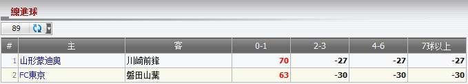

總入球
定義:
顯示總代理基於注單佔成數的輸贏, 投注類型之: 總入球. 這份報告分開每場賽事交易。

圖 1.1
- 從上圖中:
- 第一投注: 會員投注於賽事 山形蒙迪奥 -vs- 川崎前锋, 投注額 = 90, 賠率 = 3.6, 總代理佔成 = 30%, 會員選擇: 0-1 為最後比分。 根據這些信息, 我們能夠計算總代理輸/贏如下:
若 比分: 0-1 --> 總代理會輸 = (賠率 - 1) * 投注額 * 總代理佔成 = (3.6 - 1)*90*30% = 70.
若 比分: 2-3, 4-6, 7球以上 --> 總代理會贏 = -投注額 * 總代理佔成 = -90*30% = -27.
-
第二投注: 會員投注於賽事 FC东京 -vs- 磐田山叶, 賠率 = 100, 投注額 = 3.1, 總代理佔成 = 30%, 會員選擇: 0-1 為最後比分。 根據這些信息, 我們能夠計算總代理輸/贏如下:
若 比分: 0-1 --> 總代理會輸 = (賠率 - 1) * 投注額 * 總代理佔成 = (3.1 - 1)*100*30% = 63.
若 比分: 2-3, 4-6, 7球以上 --> 總代理會贏 = -投注額 * 總代理佔成 = -100*30% = -30.